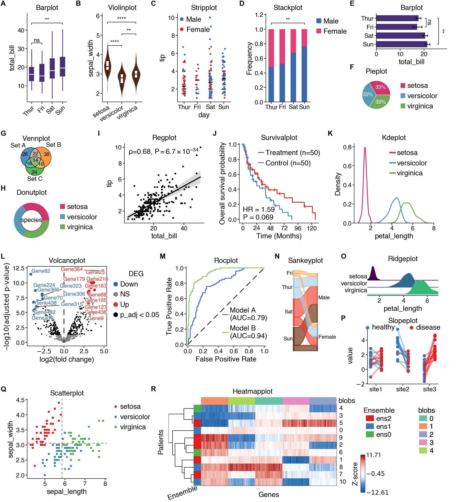

cnsplots¶
Publication-ready scientific visualizations for Cell, Nature, and Science journals.
cnsplots is a Python visualization library built on matplotlib and fully compatible with seaborn. It creates figures that meet the high standards of top-tier scientific publications while keeping the API simple and intuitive.

Key Features¶
Publication-ready defaults — Figures styled for Cell, Nature, and Science journals
Adobe Illustrator compatible — PDF fonts work seamlessly in publication workflows
Familiar API — Built on matplotlib/seaborn, easy to learn if you know these libraries
Precise sizing — Dimensions in pixels for exact control
Quick Example¶
import cnsplots as cns
import seaborn as sns
df = sns.load_dataset("tips")
cns.figure(150, 100) # Height x Width in pixels
cns.boxplot(data=df, x="day", y="total_bill")
cns.savefig("figure.svg")
New to cnsplots? Start here for a quick tutorial.
Installation guide and setup instructions.
Gallery of examples showing what you can do with cnsplots.
Detailed description of all cnsplots functions and parameters.
Published release history and changelog highlights.